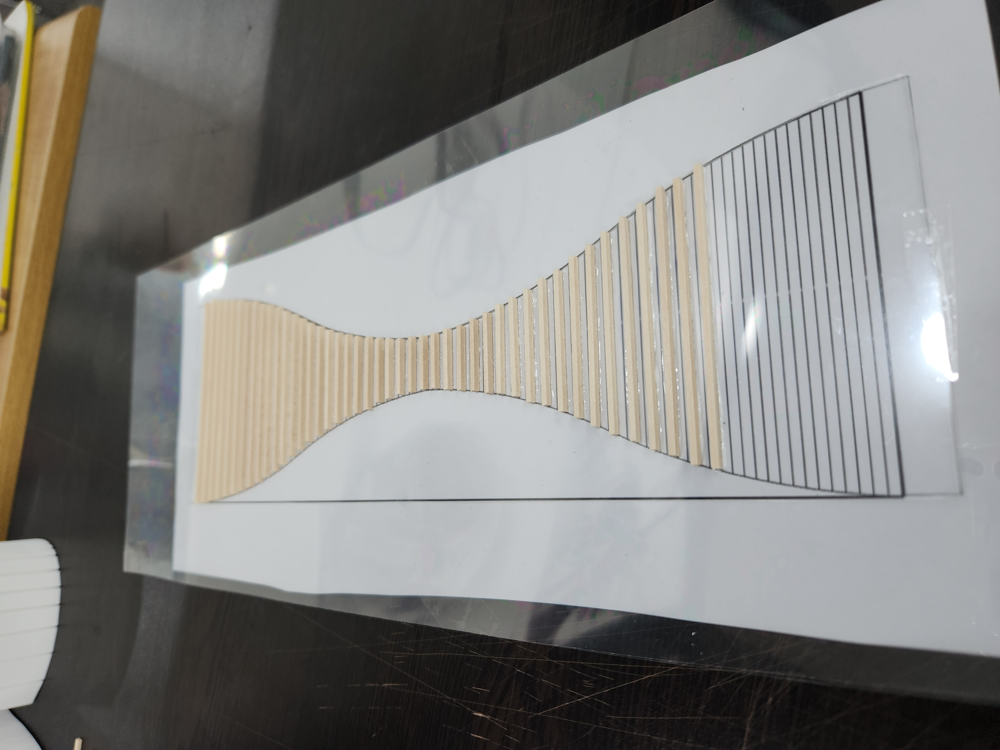
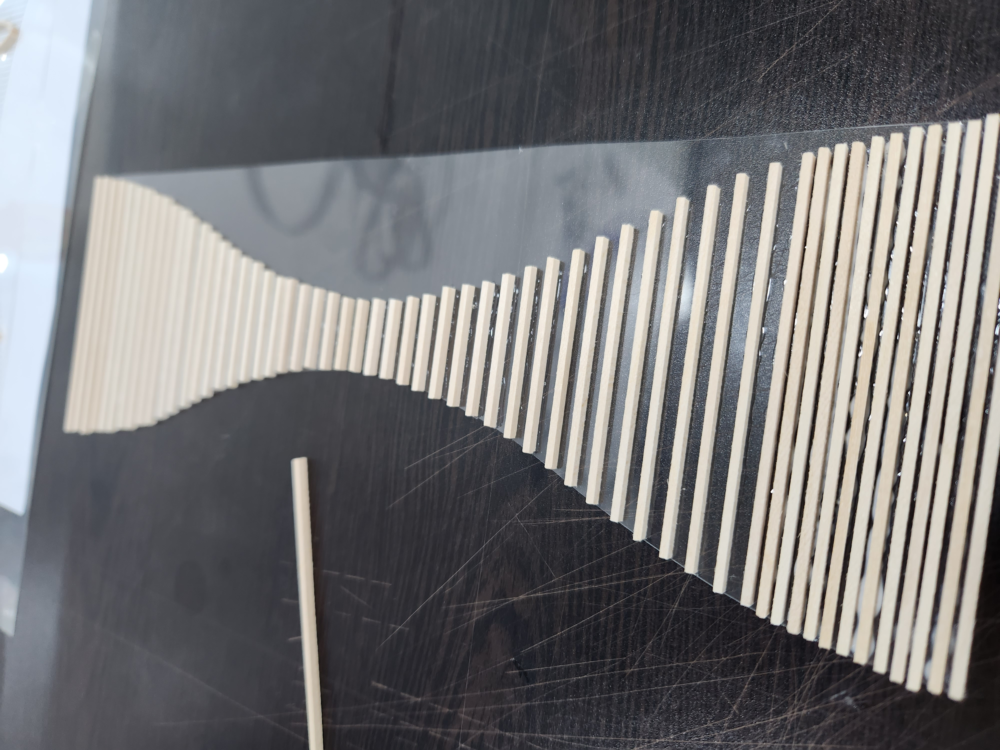
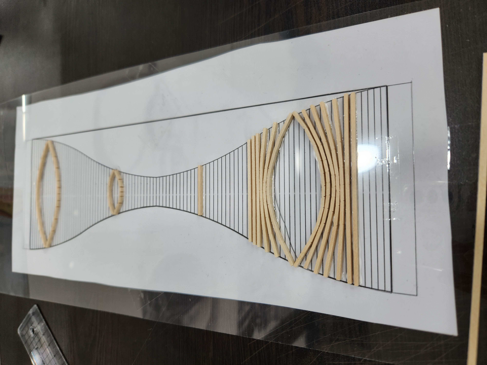
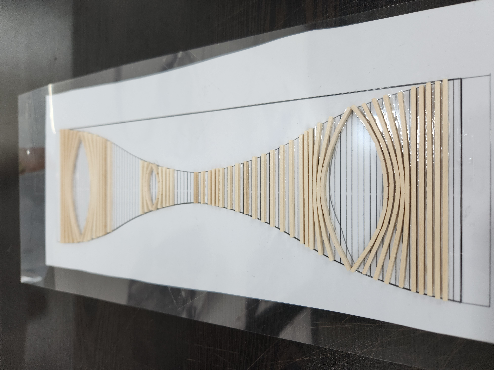
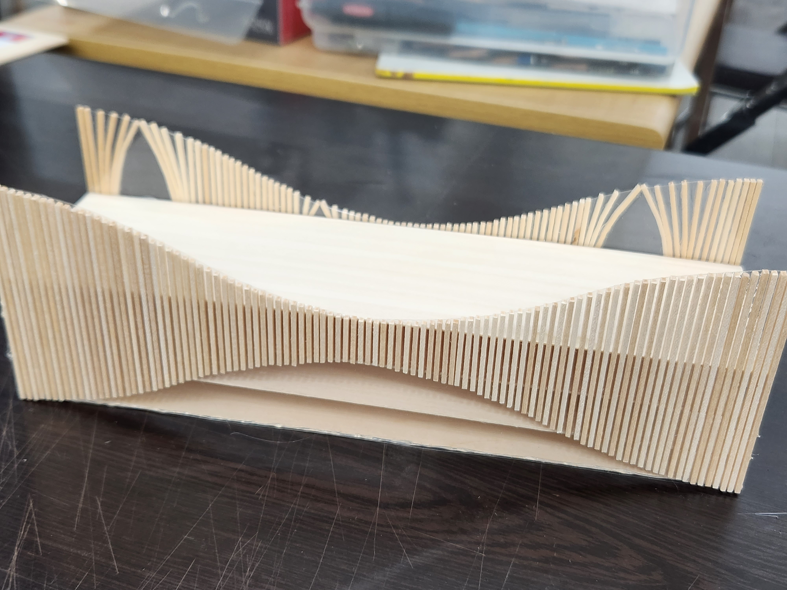
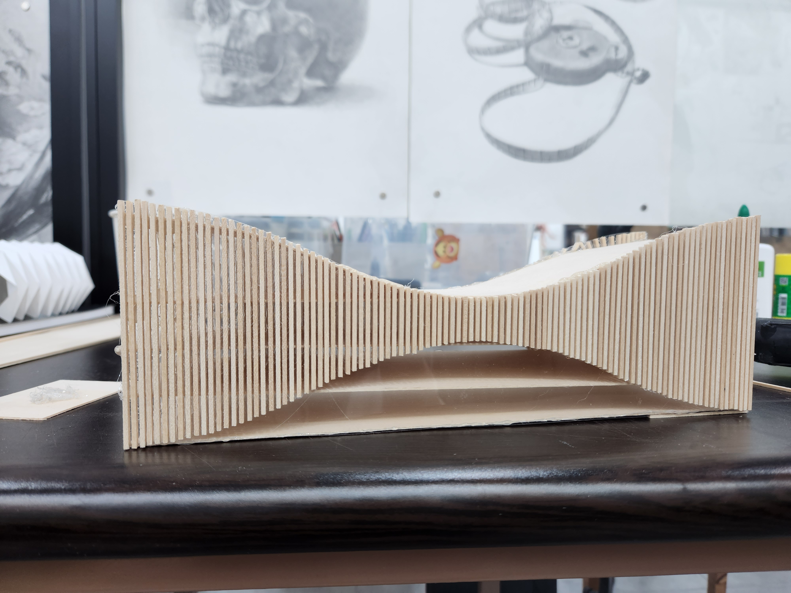
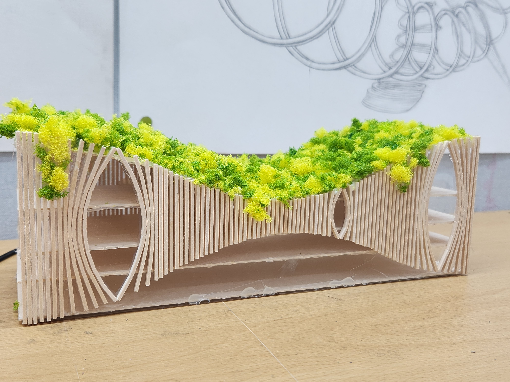
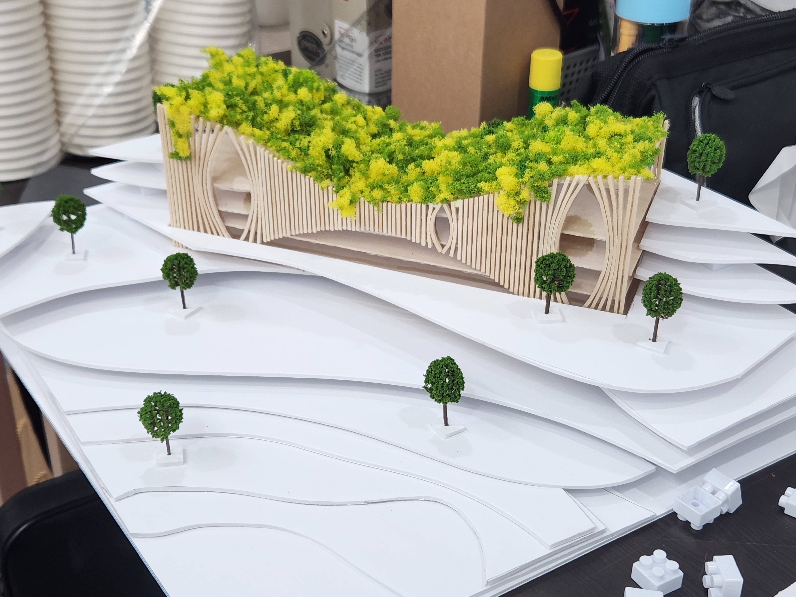
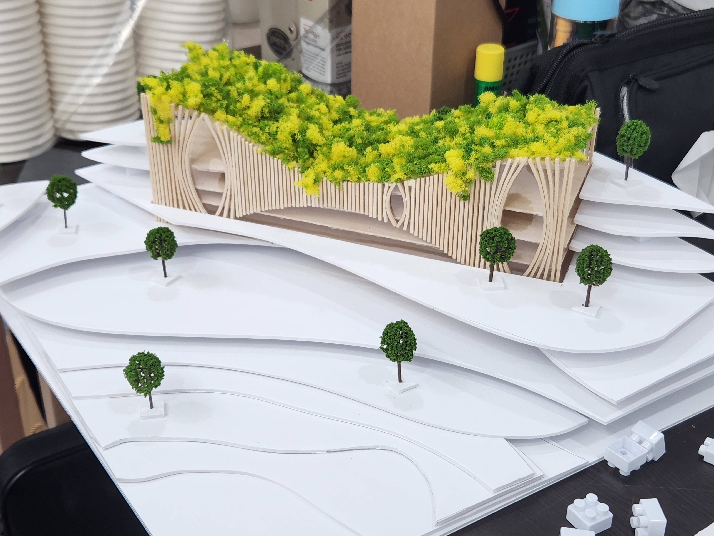
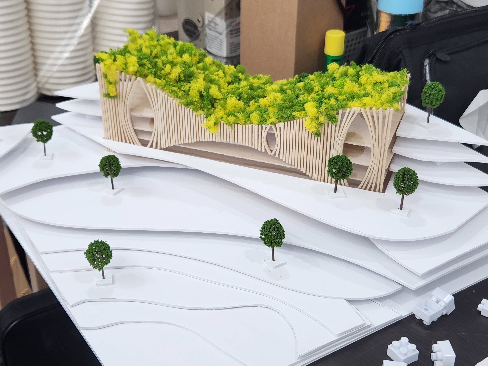

The Greenspan Gallery
Sep 12, 2023
Constructing buildings often involves the destruction of forests and the removal of trees, which has a detrimental impact on wildlife habitats. To address this issue, I propose the concept of a wildlife overpass designed to function as a building. This structure would provide a pathway for wildlife by incorporating gardens on the rooftop where natural elements can thrive. Additionally, the building would serve as both a gallery and a wildlife crossing.








 

